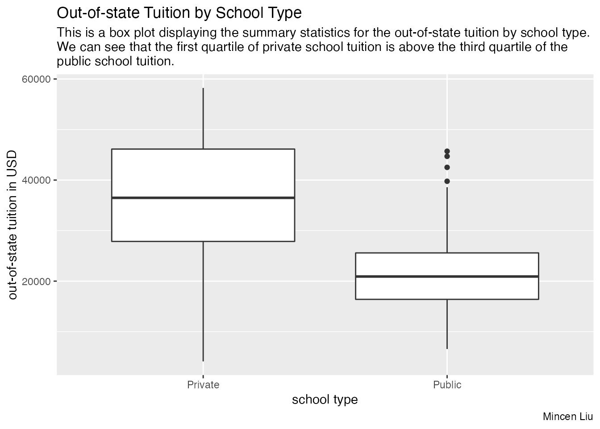
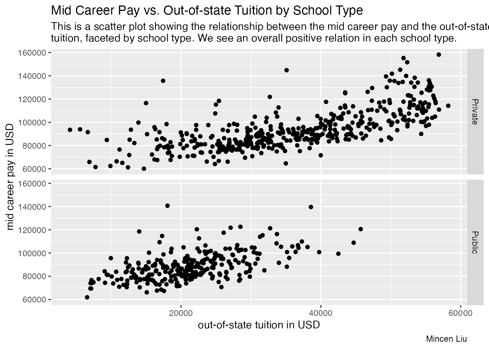
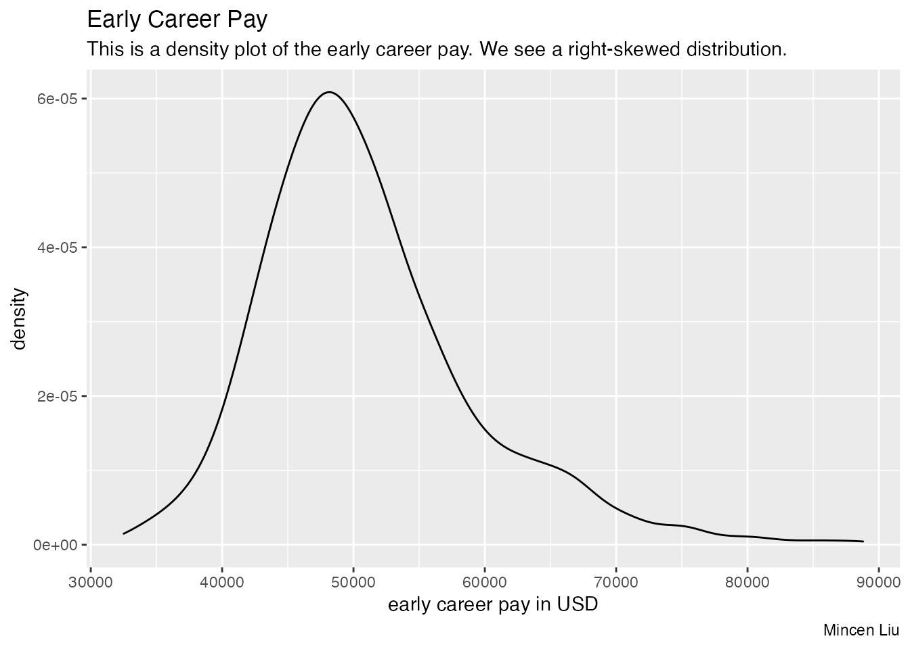

library(omnibus)
library(here)
#> here() starts at /Users/mincen/Desktop/JHU/Courses/Fall22Term2/140.840_Statistical_Programming/Projects/omnibus
library(readr)
library(dplyr)
#>
#> Attaching package: 'dplyr'
#> The following objects are masked from 'package:stats':
#>
#> filter, lag
#> The following objects are masked from 'package:base':
#>
#> intersect, setdiff, setequal, union
library(stringr)
library(purrr)
library(ggplot2)Question
- This data analysis aims to explore the college tuition and pay after graduation and their relationship.
Original Data
- The data originally came from the US Department of Education. I found the data on TidyTuesday and the link to its GitHub repository is https://github.com/rfordatascience/tidytuesday/tree/master/data/2020/2020-03-10.
- I use 2 datasets from this repository: tuition_cost.csv which contains the in-state and out-state tuition for each school and salary_potential.csv which contains early and mid career pay in USD for students in each school.
Load Data
# tests if a directory named "data" exists locally
if(!dir.exists(here("data"))) { dir.create(here("data")) }
if(!file.exists(here("data", "tuition_cost.RData")) | !file.exists(here("data", "salary_potential.RData"))){
tuition_cost <- read_csv('https://raw.githubusercontent.com/rfordatascience/tidytuesday/master/data/2020/2020-03-10/tuition_cost.csv')
salary_potential <- read_csv('https://raw.githubusercontent.com/rfordatascience/tidytuesday/master/data/2020/2020-03-10/salary_potential.csv')
# save the files to RData objects
save(tuition_cost, file = here("data", "tuition_cost.RData"))
save(salary_potential, file = here("data", "salary_potential.RData"))
}
tuition_cost <- get(load(here("data", "tuition_cost.RData")))
salary_potential <- get(load(here("data", "salary_potential.RData")))
glimpse(tuition_cost)
#> Rows: 2,973
#> Columns: 10
#> $ name <chr> "Aaniiih Nakoda College", "Abilene Christian Univ…
#> $ state <chr> "Montana", "Texas", "Georgia", "Minnesota", "Cali…
#> $ state_code <chr> "MT", "TX", "GA", "MN", "CA", "CO", "NY", "NY", "…
#> $ type <chr> "Public", "Private", "Public", "For Profit", "For…
#> $ degree_length <chr> "2 Year", "4 Year", "2 Year", "2 Year", "4 Year",…
#> $ room_and_board <dbl> NA, 10350, 8474, NA, 16648, 8782, 16030, 11660, 1…
#> $ in_state_tuition <dbl> 2380, 34850, 4128, 17661, 27810, 9440, 38660, 537…
#> $ in_state_total <dbl> 2380, 45200, 12602, 17661, 44458, 18222, 54690, 1…
#> $ out_of_state_tuition <dbl> 2380, 34850, 12550, 17661, 27810, 20456, 38660, 9…
#> $ out_of_state_total <dbl> 2380, 45200, 21024, 17661, 44458, 29238, 54690, 2…
glimpse(salary_potential)
#> Rows: 935
#> Columns: 7
#> $ rank <dbl> 1, 2, 3, 4, 5, 6, 7, 8, 9, 10, 11, 12, 13, 1…
#> $ name <chr> "Auburn University", "University of Alabama …
#> $ state_name <chr> "Alabama", "Alabama", "Alabama", "Alabama", …
#> $ early_career_pay <dbl> 54400, 57500, 52300, 54500, 48400, 46600, 49…
#> $ mid_career_pay <dbl> 104500, 103900, 97400, 93500, 90500, 89100, …
#> $ make_world_better_percent <dbl> 51, 59, 50, 61, 52, 53, 48, 57, 56, 58, 60, …
#> $ stem_percent <dbl> 31, 45, 15, 30, 3, 12, 27, 17, 17, 20, 8, 7,…Data Wrangling
# We first combine the 2 data frames. We include only schools that are in both data frames.
combined <- inner_join(tuition_cost, salary_potential, by = "name")
# Remove unwanted variables
combined <- combined %>% select(-room_and_board, -in_state_total, -out_of_state_total, -rank, -make_world_better_percent)
# Check if there's any NAs. If missing values exist, get the corresponding row numbers.
naRows(combined)
#> integer(0)Luckily, we don’t have any missing values.
# We want to check whether there's any discrepancy between the "state" variables from the 2 data frames.
temp <- map2(.x = combined$state, .y = combined$state_name, .f = ~str_equal(.x, .y))
# Save the index of not matched cases
ind <- which(temp == FALSE)
combined %>% slice(ind) %>% select(state, state_name)
#> # A tibble: 135 × 2
#> state state_name
#> <chr> <chr>
#> 1 New York New-York
#> 2 North Carolina North-Carolina
#> 3 South Dakota South-Dakota
#> 4 New York New-York
#> 5 North Carolina North-Carolina
#> 6 North Carolina North-Carolina
#> 7 South Carolina South-Carolina
#> 8 South Dakota South-Dakota
#> 9 New Jersey New-Jersey
#> 10 West Virginia West-Virginia
#> # … with 125 more rowsFrom here, we see that it is possible that the difference in the 2 columns is caused by the dash in the values of “state_name”. We’re going to check that.
# Replace "-" with " "
combined$state_name <- str_replace(combined$state_name, "-", " ")
temp2 <- pmap(list(x = combined$state, y = combined$state_name),
.f = ~str_equal(..1, ..2))
ind2 <- which(temp2 == FALSE)
combined %>% slice(ind2) %>% select(name, state, state_code, state_name)
#> # A tibble: 4 × 4
#> name state state_code state_name
#> <chr> <chr> <chr> <chr>
#> 1 Northwestern College Illinois IL Iowa
#> 2 St. John's College Illinois IL Maryland
#> 3 St. John's College New Mexico NM Maryland
#> 4 Sterling College Vermont VT KansasWe remove the 4 observations with inconsistent information.
combined <- combined %>% slice(-ind2) %>% select(-state_name)
combined
#> # A tibble: 724 × 10
#> name state state…¹ type degre…² in_st…³ out_o…⁴ early…⁵ mid_c…⁶ stem_…⁷
#> <chr> <chr> <chr> <chr> <chr> <dbl> <dbl> <dbl> <dbl> <dbl>
#> 1 Adams St… Colo… CO Publ… 4 Year 9440 20456 44400 81400 3
#> 2 Adventis… Flor… FL Priv… 4 Year 15150 15150 51600 89800 5
#> 3 Agnes Sc… Geor… GA Priv… 4 Year 41160 41160 46000 83600 26
#> 4 Alabama … Alab… AL Publ… 4 Year 11068 19396 39800 71500 16
#> 5 Alaska P… Alas… AK Priv… 4 Year 20830 20830 50300 90000 6
#> 6 Albany C… New … NY Priv… 4 Year 35105 35105 81000 144800 2
#> 7 Albertus… Conn… CT Priv… 4 Year 32060 32060 49700 85900 2
#> 8 Albion C… Mich… MI Priv… 4 Year 45775 45775 52100 99300 23
#> 9 Alcorn S… Miss… MS Publ… 4 Year 7144 7144 40900 69500 19
#> 10 Allen Co… Iowa IA Priv… 4 Year 19970 19970 51600 91300 0
#> # … with 714 more rows, and abbreviated variable names ¹state_code,
#> # ²degree_length, ³in_state_tuition, ⁴out_of_state_tuition,
#> # ⁵early_career_pay, ⁶mid_career_pay, ⁷stem_percent
combined %>% count(degree_length)
#> # A tibble: 2 × 2
#> degree_length n
#> <chr> <int>
#> 1 2 Year 3
#> 2 4 Year 721We keep only the 4-year schools.
combined <- combined %>% filter(degree_length == "4 Year")
combined
#> # A tibble: 721 × 10
#> name state state…¹ type degre…² in_st…³ out_o…⁴ early…⁵ mid_c…⁶ stem_…⁷
#> <chr> <chr> <chr> <chr> <chr> <dbl> <dbl> <dbl> <dbl> <dbl>
#> 1 Adams St… Colo… CO Publ… 4 Year 9440 20456 44400 81400 3
#> 2 Adventis… Flor… FL Priv… 4 Year 15150 15150 51600 89800 5
#> 3 Agnes Sc… Geor… GA Priv… 4 Year 41160 41160 46000 83600 26
#> 4 Alabama … Alab… AL Publ… 4 Year 11068 19396 39800 71500 16
#> 5 Alaska P… Alas… AK Priv… 4 Year 20830 20830 50300 90000 6
#> 6 Albany C… New … NY Priv… 4 Year 35105 35105 81000 144800 2
#> 7 Albertus… Conn… CT Priv… 4 Year 32060 32060 49700 85900 2
#> 8 Albion C… Mich… MI Priv… 4 Year 45775 45775 52100 99300 23
#> 9 Alcorn S… Miss… MS Publ… 4 Year 7144 7144 40900 69500 19
#> 10 Allen Co… Iowa IA Priv… 4 Year 19970 19970 51600 91300 0
#> # … with 711 more rows, and abbreviated variable names ¹state_code,
#> # ²degree_length, ³in_state_tuition, ⁴out_of_state_tuition,
#> # ⁵early_career_pay, ⁶mid_career_pay, ⁷stem_percentWe want to find the modal value(s) for the percent of student body in STEM:
mmode(combined$stem_percent)
#> [1] 0 7We can see that the modes are 0 and 7.
Data Visualization
- Plot 1
combined %>% ggplot(aes(x = type, y = out_of_state_tuition)) +
geom_boxplot() +
labs(title = "Out-of-state Tuition by School Type",
subtitle = "This is a box plot displaying the summary statistics for the out-of-state tuition by school type.\nWe can see that the first quartile of private school tuition is above the third quartile of the\npublic school tuition.",
caption = "Mincen Liu") +
xlab("school type") + ylab("out-of-state tuition in USD")
- Plot 2
combined %>% ggplot(aes(x = out_of_state_tuition, y = mid_career_pay)) +
geom_point() +
facet_grid(type ~ .) +
labs(title = "Mid Career Pay vs. Out-of-state Tuition by School Type",
subtitle = "This is a scatter plot showing the relationship between the mid career pay and the out-of-state\ntuition, faceted by school type. We see an overall positive relation in each school type.",
caption = "Mincen Liu") +
xlab("out-of-state tuition in USD") + ylab("mid career pay in USD")
- Plot 3
combined %>% ggplot(aes(early_career_pay)) +
geom_density() +
labs(title = "Early Career Pay",
subtitle = "This is a density plot of the early career pay. We see a right-skewed distribution.",
caption = "Mincen Liu") +
xlab("early career pay in USD") + ylab("density")
Interpretation
- On average, private school out-of-state tuition is much higher than public school out-of-state tuition among the 4-year institutions.
- We see an overall positive relation between the mid career pay and the out-of-state tuition in each school type.
- The early career pay has a right-skewed distribution.
List of Functions Used
-
dplyr:glimpse(),inner_join(),select(),slice(),count(),filter() -
stringr:str_equal(),str_replace() -
purrr:map2(),pmap() -
ggplot2:geom_boxplot(),geom_point(),geom_density() -
omnibus:naRows(),mmode()